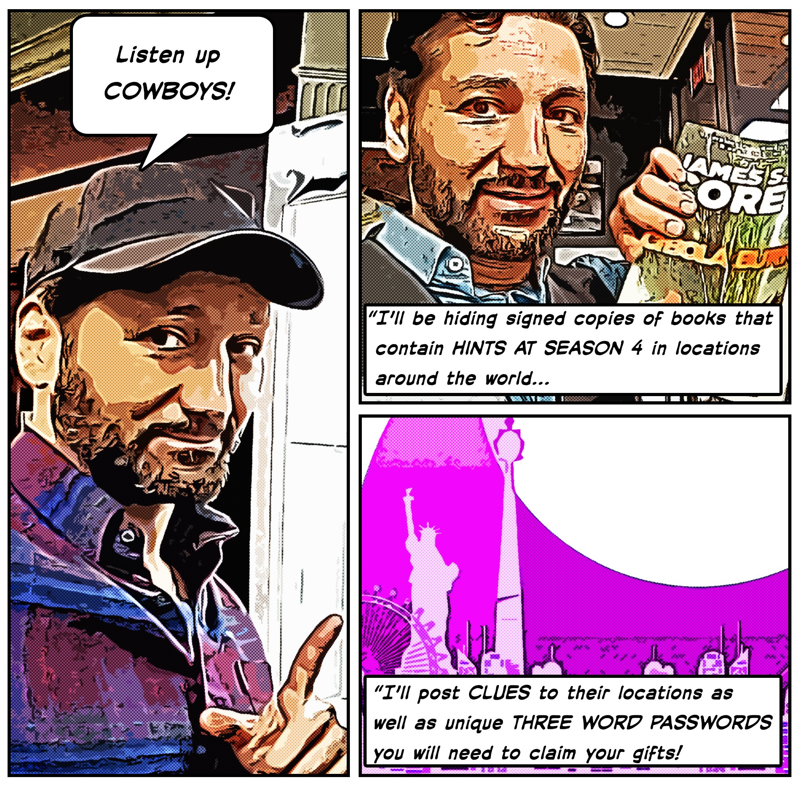
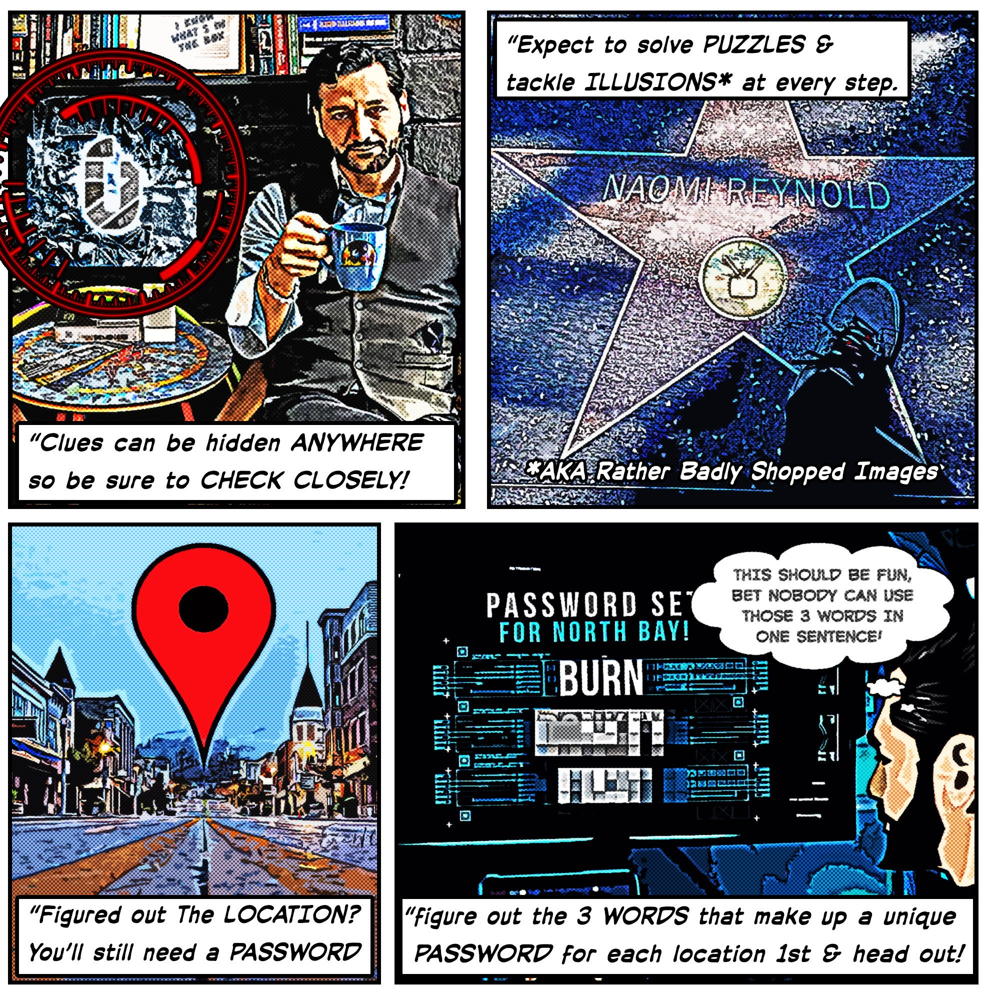
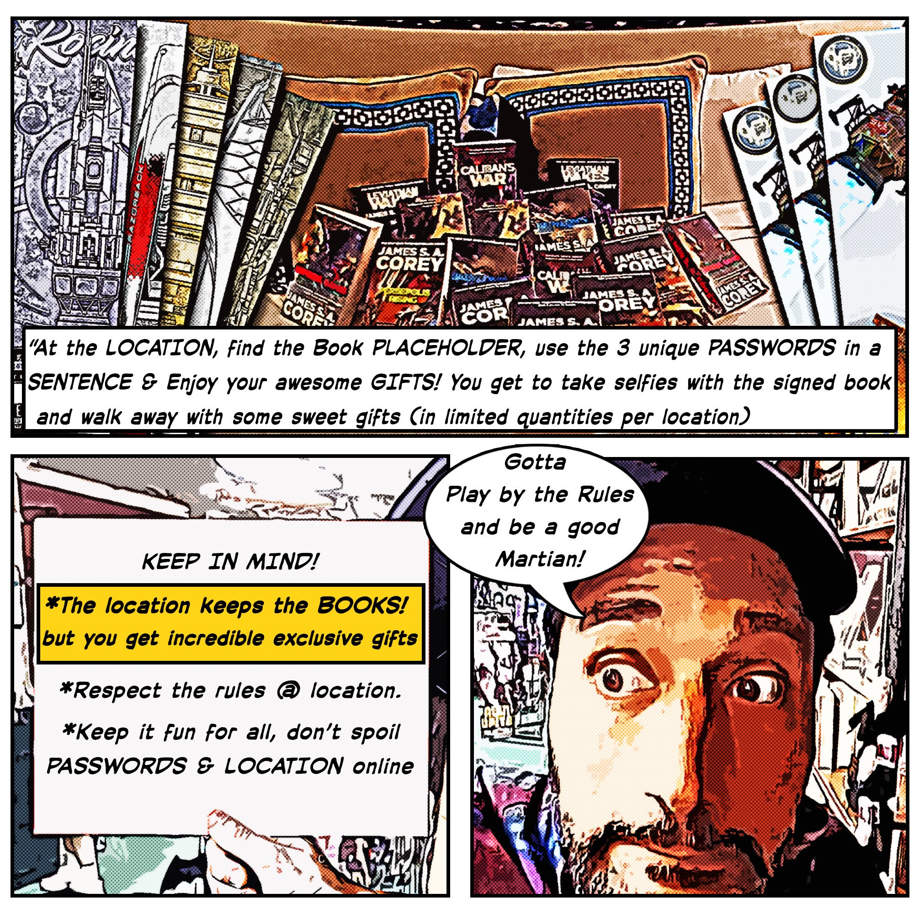

Instructions




These instructions are copied from this tweet. Essentially you have to do the following:
- This game requires you to find a location and a password. You can find these online and participate from anywhere in the world.
- The password clue is distributed as a video. Each video show three phrases similar to ones which appear in The Expanse television series, but with one word altered. So for example a clue might be "Io is the most important food station out here," but everyone knows that Ganymede is the most important food station around Jupiter. So Ganymede would be the part of the password. Each password contains three words.
- The location clue consists of a set of images. The images are taken in and around a location, which seems to be a book store or comic book store. There may be some subtle photoshopping in the photo which is significant in some way, so do look carefully at all the photos.
- If you are playing in person you must go to the location, find the placeholder book, and give it to the clerk and utter a sentence which uses the words from the password. They will take the book and provide you with prizes!
- If you are playing remotely, you must create a sentence from the passwords and email it to MartianOnTheLoose@gmail.com along with the name and address of the location. How do you find the location? A good place to start is Google Maps and Street View.
New Hunt is Coming (June 24, 2019)
Retweet to Start
#MOTL in Anaheim!
— Cas Anvar (@Casanvar) June 20, 2019
Get ready 4 the worldwide unveiling of the game that broke the internet!
Demented weapons & Epic loot awaits, Load up 250 Retweets NOW to launch game!#ScreamingFirehawks#AnaheimHunt@ExpanseOnPrime @PrimeVideo pic.twitter.com/IXI0RRopWy